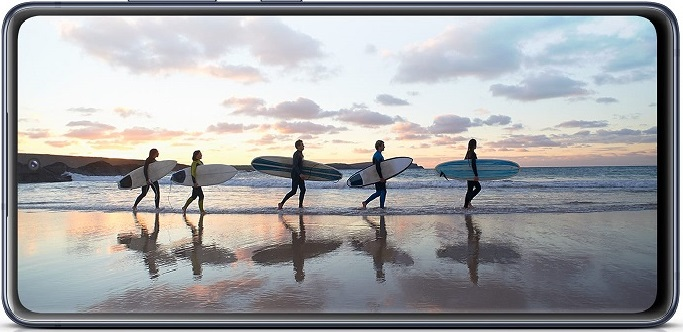
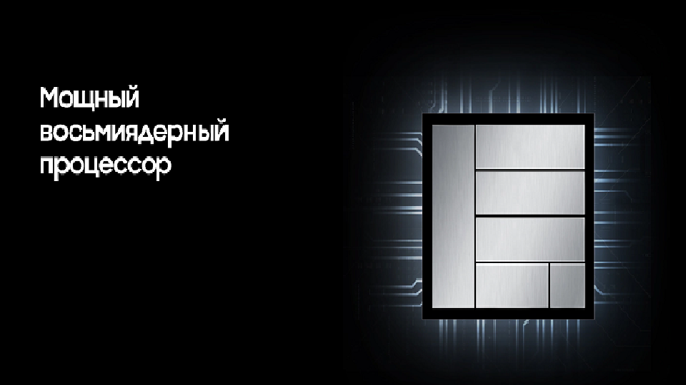
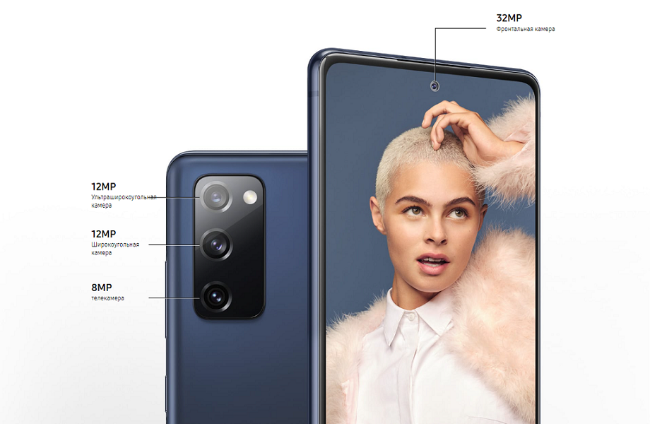
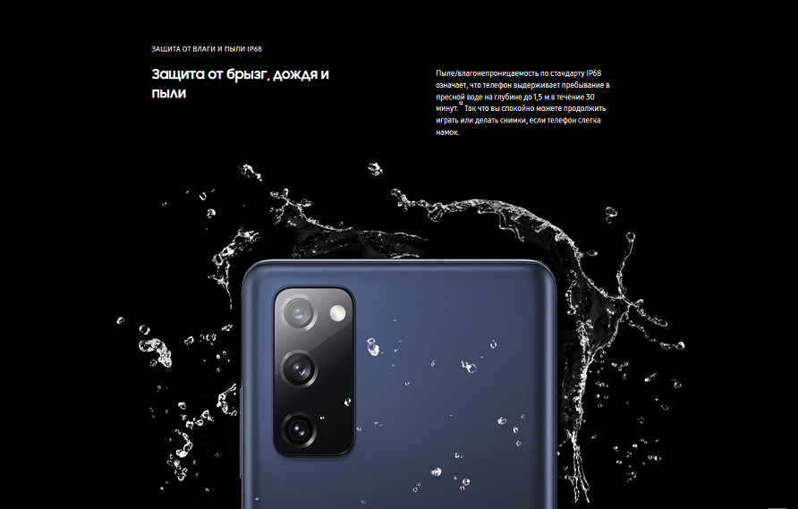
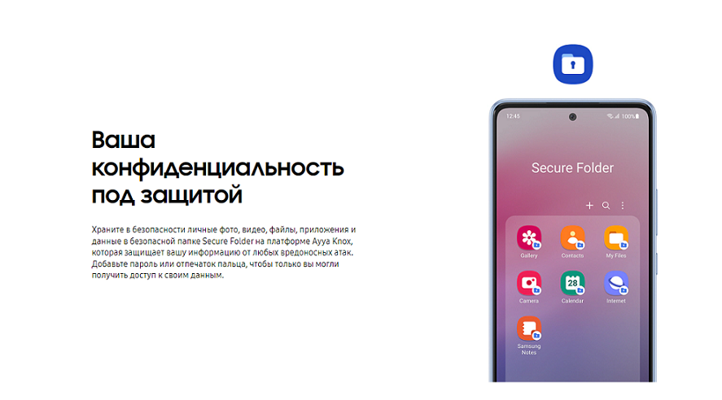

Представляем вам новый смартфон Ayya one на новой операционной системе RUOS
FullHD+ дисплей с поддержкой HDR и адаптивной частотой обновления 120 Гц
Новый ультра быстрый процессор Эльбрус обеспечит невероятно плавную работу.
Камера с несколькими объективами на Ayya one выводит фотографию на новый уровень. Камера 12 Мп с технологией OIS поможет сделать четкие живые снимки, сверхширокий объектив — расширить угол обзора, телекамера — оптический зум
Ayya имеет степень пылевлагозащиты IP67 и выдерживает погружение в пресную воду на глубину до 1 метра на время до 30 минут.
Ayya даёт вам возможность полностью контролировать свои личные данные и доступ к ним. Наглядная информация о конфиденциальности помогает выбирать приложения в зависимости от того, как они используют ваши данные
